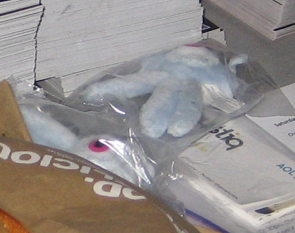
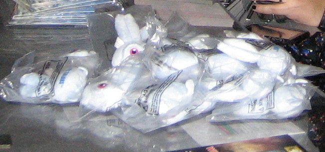
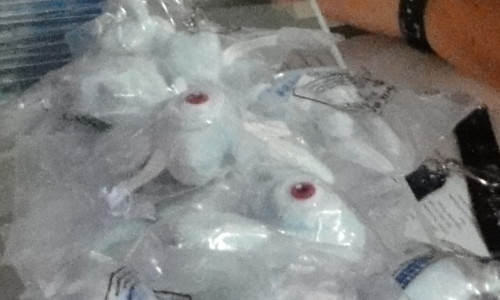
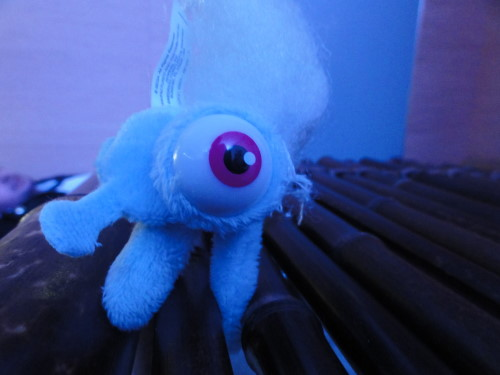
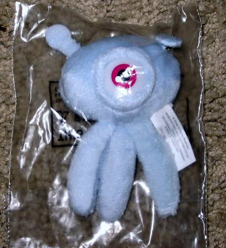
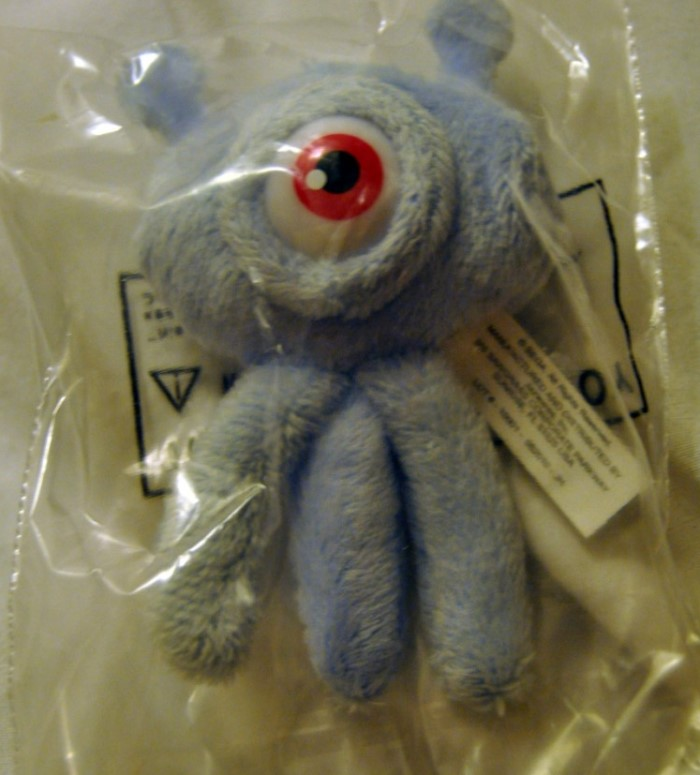
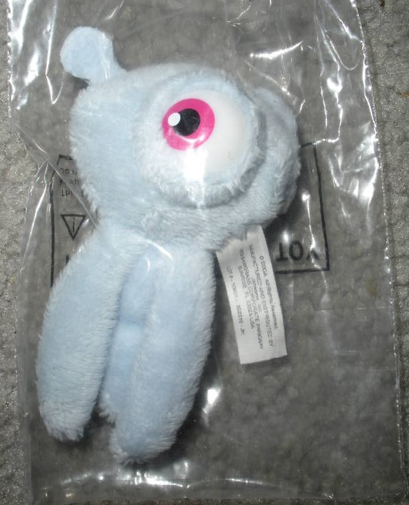

🏠 首頁
📁 未知版塊
發現圓滾滾的Wisp布偶在PAX!
👤 binyi
🕐 2010-09-10 05:08:48
從SEGA的PAX日記分享的照片中，瞄到Wisp布偶…[:smile23:]有別於
E3版本
，整個白白胖胖的，材質似乎也不一樣
所以我就順便截出來欣賞啦：
在贈品攤…

附件: 1.jpg
↑發現兩隻胖章魚

附件: 3.jpg
↑一堆胖章魚

附件: 4.jpg
↑整個圓到不行

附件: 2.jpg
↑塞棉花中
有興趣看完整網誌的的可以點這個連結：
http://blogs.sega.com/usa/2010/09/09/sega-pax-2010/
👤 sonic3781
🕐 2010-09-10 05:27:16
哈~不知為什麼，
想把那個wisp布偶拿來當作整人工具XDD
當有人來拜訪時門一開，就從上面掉下來給一個[愛]的見面禮！
不知道有沒有製作火箭wisp的布偶...因為還蠻像某電影\"四眼天雞\"的外星寶寶!
👤 binyi
🕐 2010-09-10 06:00:08
所以是Sonic刺刺帽子的由來了？[:smile35:]
主菜只有章魚的話似乎太單調，加個蘿蔔、海膽、檸檬…或許不錯，我再找時機問設計商 XD
編輯：某E拍發現有幾隻PAX版本未拆封章魚！
抓幾隻照片上來：

附件: 6.jpg

附件: 5.jpg

附件: 8.jpg